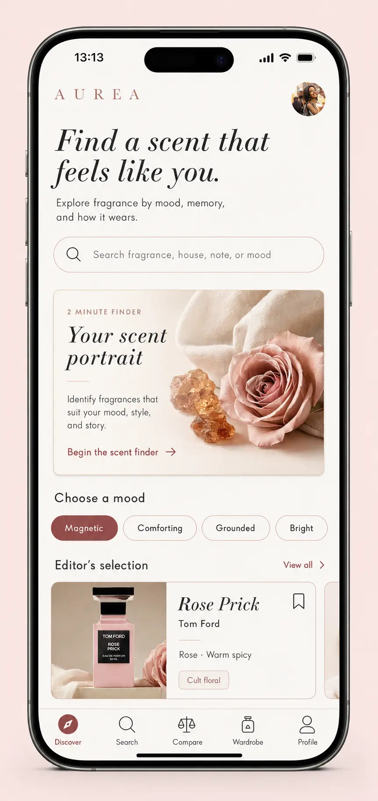

Guidance never blocks direct access
Known-title search, house, note, price, ingredient, format, and availability remain first-class paths outside the scent portrait.
An explainable fragrance system that helps people translate taste into a credible sample shortlist, compare how scents behave, and build a private record of real-world wear—without pretending a recommendation can predict chemistry.

Digital fragrance shopping often reduces a changing sensory experience to a note pyramid, crowd rating, and polished campaign image. Those signals can inspire interest, but they cannot tell one person exactly how a scent will develop on their skin, in their climate, or across a day.
Aurea reframes the product around a more credible job: help someone form a sample shortlist, understand why a recommendation fits, compare meaningful differences, and learn from their own wear history. Editorial storytelling creates desire; provenance, ranges, and personal evidence support judgment.
The journey moves from inspiration to a credible sample decision, then turns real-world wear into durable personal context. Each stage has a different responsibility so marketing language, catalog facts, community reports, and private experience do not blur into one false certainty.
Begin with mood, occasion, known notes, brand, budget, format, or direct search—and skip guided discovery entirely.
See which explicit inputs and catalog attributes shaped the match, then correct any signal that feels wrong.
Contrast scent profile, reported ranges, price, availability, ingredients, and format before choosing a sample path.
Log context and personal performance, then use that evidence to update the archive and future shortlists.
| Mode | User question | System responsibility | Durable state |
|---|---|---|---|
| Discover | What might fit the moment? | Translate explicit intent into a diverse shortlist and show why each option entered it. | Session inputs, shortlist, corrections |
| Evaluate | What is meaningfully different? | Separate brand facts, editorial interpretation, community ranges, price, and availability. | Comparison set, rationale, sample option |
| Wear | How did it behave for me? | Capture date, climate, application, duration, projection, impression, and privacy state. | Wear log linked to fragrance and context |
| Return | What have I learned about my taste? | Restore owned, sampled, wish-list, and retired states without turning the archive into a promotional feed. | Wardrobe, history, personal patterns |
Known-title search, house, note, price, ingredient, format, and availability remain first-class paths outside the scent portrait.
Climate, skin, batch, application, and source accompany longevity and projection so a reported average is not presented as universal truth.
Wear logs are private by default, exportable, deletable, and never silently repurposed for advertising or permanent identity labels.
Aurea may translate and explain signals; it must not claim to know how a fragrance will smell on a person before they experience it. The responsible outcome is a better sample decision—not algorithmic certainty.
I documented the tension behind each major choice so a product team could preserve the intent through delivery, test the underlying premise, and reverse a design that looks beautiful but produces weak or misleading decisions.
Mood and visual choices create a session-specific hypothesis that remains editable alongside familiar fragrance filters.
Editorial description creates an impression; labeled sources and ranges support the decision beneath it.
Opening, heart, and drydown provide a time model; longevity and projection use reported ranges with context.
Owned, sampled, wish-list, retired, and signature states combine with private wear evidence.
Use explicit session inputs, catalog attributes, and disclosed sources to create a shortlist and articulate the match.
Expose alternatives, source, uncertainty, availability, format, and an immediate path to revise or sample.
Never promise chemistry, suppress options through an opaque profile, or disguise paid placement as personal fit.
Warm neutrals and dusty rose reference cosmetic packaging, paper archives, and vanity objects. A characterful serif carries fragrance identity and editorial moments; a neutral sans serif carries controls, source labels, prices, ingredients, availability, and system feedback. Atmosphere frames the decision—it never replaces it.
#F8F4EF#AE747C#B69C8B#282321Serif typography signals identity and narrative. Sans serif typography supports scanning, controls, provenance, uncertainty, and technical information.
Price, size, format, ingredients, availability, source, and sampling access cannot be buried beneath storytelling.
Comparison alignment may stack, but labels, units, source, and the active candidate remain understandable at every breakpoint.
Selected, saved, sampled, owned, unavailable, syncing, offline, empty, loading, and error states use language beyond color.
Keyboard order, visible focus, zoom, screen-reader names, reduced motion, text scaling, contrast, and 44px targets enter QA.
Brand-provided facts, editorial interpretation, community ranges, and the user’s own log receive distinct labels and ownership.
Responsive WebP sources, lazy gallery loading, explicit media dimensions, caching, resilient fonts, and progressive enhancement protect the core path.
The interface traces intent → rationale → comparison → sample → personal evidence. These screens demonstrate hierarchy, state, and visual-system intent; they do not establish recommendation accuracy, demand, or technical feasibility.
| Prototype slice | Decision represented | What the screens demonstrate | What still needs evidence |
|---|---|---|---|
| Portrait → matches | Editable intent and explainable ranking | Question sequence, selected state, rationale hierarchy | Vocabulary comprehension, relevance, shortlist diversity |
| Overview → compare | Story plus sourced decision support | Progressive disclosure, temporal model, aligned comparison | Source quality, comparison success, sampling impact |
| Search → archive | Stable ownership state outside promotion | Filter density, collection status, return hierarchy | Required categories, retrieval value, longitudinal use |
| Wear log | Personal evidence closes the loop | Capture structure, context fields, private default | Logging burden, privacy expectations, future-decision value |
A guided portrait turns mood into a useful scent profile, then explains why each recommendation fits instead of presenting an anonymous catalog.
Search by fragrance, house, note, or mood—or begin with a two-minute scent portrait.
Large visual choices translate emotional language into scent families without requiring fragrance expertise.
A legible profile and match rationale make recommendations feel personal, explainable, and comparable.
Progressive disclosure keeps the experience atmospheric while giving users clear notes, evolution, longevity, projection, and side-by-side differences when they need them.
The emotional brief leads; match confidence and practical wear facts support the next decision.
A temporal story replaces abstract note pyramids with opening, heart, and drydown moments.
A simple wear curve and clear conditions communicate performance without a dense technical dashboard.
A concise verdict explains the meaningful difference before aligned product details support deeper review.
Search, wardrobe states, a signature scent, and private wear notes transform saving from a static wish list into a useful record of personal taste.
Readable result cards surface match, accords, performance, save, and compare without tiny image overlays.
Consistent cards, collection states, and wear history make the wardrobe expressive and easy to scan.
A calm, private-by-default journal helps users notice personal patterns across context and performance.
Each study is tied to a product decision and a failure condition. The sequence separates vocabulary and value risk from interface usability, longitudinal archive value, data quality, accessibility, and commercial integration.
Moderated interviews and card sorting with fragrance newcomers and enthusiasts test whether people begin with notes, house, occasion, mood, season, budget, or community language. Gate: remove or rewrite any portrait dimension that requires facilitation or produces incompatible expectations.
Participants find a sample candidate, explain the match, correct a miss, and compare meaningful differences against a direct-search baseline. Gate: guided discovery cannot advance if it slows known-title access or weakens perceived control.
A 2–4 week pilot follows sampling, logging, retrieval, and whether personal evidence changes a later decision. Gate: simplify or defer the archive if logging effort does not produce useful recall, comparison, or taste learning.
Audit keyboard, screen reader, zoom, text scaling, contrast, error states, source freshness, inventory, price, affiliate disclosure, and ingredient messaging. Gate: critical discovery and sampling tasks remain operable without pointer, color, or motion.
| Outcome | Leading signal | Guardrail | Decision informed |
|---|---|---|---|
| Form a credible shortlist | Time to sample candidate, rationale comprehension, first-miss recovery | Known-title and full-catalog access do not degrade | Keep, revise, or remove the scent portrait |
| Compare meaningfully | Correct identification of fit, performance, price, and format tradeoffs | Ranges and sources are not mistaken for guarantees | Set comparison density and provenance requirements |
| Learn from wear | Log completion, later retrieval, evidence reused in a decision | Private by default with export and deletion | Invest in the archive or simplify to status + notes |
| Build trust | Correction use, paid-placement recognition, uncertainty comprehension | No undisclosed ranking influence or chemistry promise | Set recommendation, editorial, and commerce governance |
A credible first release should let someone search or declare intent, understand a shortlist, compare candidates, and reach a sample. The learning loop expands only after content provenance, accessibility, data coverage, and customer value support it.
Align the content, data, and state model before adding more polished screens.
Release the smallest complete loop that can test trust and decision quality.
Advance collection depth only when returning behavior earns the complexity.
| Workstream | Accountable focus | Critical dependency | Decision artifact |
|---|---|---|---|
| Product + design | Customer value, scope, hierarchy, service states | Research evidence and business model | Product brief, decision ledger, acceptance criteria |
| Editorial + fragrance content | Taxonomy, tone, source distinction, review cadence | Expert standards and brand/community data rights | Content model, provenance rules, exception policy |
| Engineering + data | Search, ranking, inventory, performance, state integrity | Catalog coverage, APIs, freshness, observability | Data contract, technical spikes, release criteria |
| Research + access + legal | Evidence quality, inclusive use, privacy, commerce disclosure | Representative recruitment and policy review | Study plan, access report, consent and disclosure rules |
Review the decision ledger at every research and build checkpoint. High fidelity does not make a direction permanent; a feature advances only when customer evidence, source quality, accessibility, commercial integrity, and technical feasibility support the same outcome.
Aurea still feels luxurious, but the product is no longer relying on atmosphere to carry its credibility.
Reframing the concept exposed the harder design work: separate sources, represent variability, keep sampling central, preserve private wear evidence, and define when personalization becomes overreach. The visual system now supports a product position instead of standing in for one.